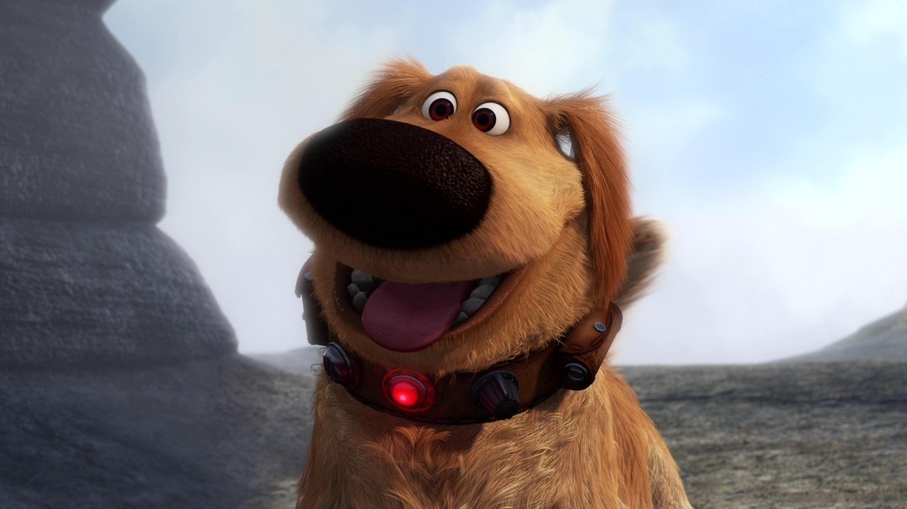

About Dug
Dug is one of the three protagonists of the movie Up. He is an obese golden retriever and a fun-loving man who speaks the language of humans through a special necklace that translates his thoughts into voice, invented by his former teacher, Charles Muntz.
Dug and his friends
Dug's characteristics
- he's a golden retriver
- he's obese but cute
- he can smell you
Dug's Friends
Dug has many dog friends, but he also has human friends